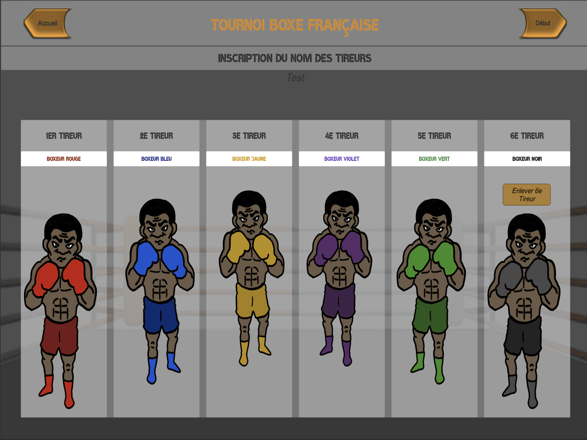

Ceci est un paragraphe avant le tableau.
|  |
| Cellule 1 | Cellule 2 |
Ceci est un paragraphe après le tableau.
Dispo sur l'app store
Cette application à été créé pour être utilisé lors de leçon d'EPS mais pourra aussi correspondre à tout entrainement sportif.
Il s'agit d'un Tournoi de Boxe Française permettant de confronter 5 à 6 tireurs.
L'objectif des tireurs pour chaque assaut est de remporter la confrontation en exploitant au mieux les apprentissages réalisés: prendre des informations et lire le rapport d'opposition pour exploiter différentes zones de touche en tenant compte de ses propres caractéristiques ainsi que celles de l'adversaire. Toucher plus avec les Pieds, qu'avec les poings, motricité moins naturelle pour les élèves mais répondant à la logique de l'activité.
Le bonus est attribué pour le respect de 2 critères:
-> Atteindre au moins 2 lignes de touches différentes au moins 2 fois (les hauteurs de touches sont : Basse, Moyenne, Haute)
-> Toucher plus à l'aide des pieds qu'à l'aide des points.
La saisie simple et intuitive de l'observation des assauts permet de renseigner facilement les actions des combattants.
A la fin du tournoi, le classement est établi en fonction des points attribués comme suit:
- une défaite classique rapporte 1 point.
- une défaite avec bonus rapporte 2 points.
- une victoire classique rapporte 2 points.
- une victoire avec bonus rapporte 3 points.
J'espère que cette application vous plaira. ;-D